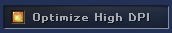

Version 0.4
The focus of this release was polishing the experience for creating music with lots of usability improvements in the editing part.
Most notable new features:
Midi support
You can enable/disable it in the Options.
It's still fairly basic as only midi-in is supported and there's no midi-mapping yet, but still a big step forward.
If you enable it, you can choose to only record the notes, or the key-velocity as well.
Optionally, you also choose to have little midi-in and key-in signal indicators on screen.

Please note that for your note-off commands to be registered as well you have to
- Be in XM-mode
- Record and playback at the same time
- Have the midi-settings to "Enabled Note-Volume"
Undo/redo support
Available both in the pattern editor and in the sample editor.
The usual Ctrl-Z and Ctrl-Y shortcuts can be used.
Nibbles
Ladies and Gentleman: It has arrived.
We finally tackled the last major hurdle for full FastTracker compatibility.
WE HAVE NIBBLES !!!

The full works as tribute to the legendary Triton, including 30 levels, highscores and some familiar hidden features.
Usability
Lots of small and large usability improvements on the "edit" front:
- Number boxes can now be edited with the keyboard and mousewheel/trackpad
- Menu can now be navigated with keyboard
- Sample editor zoom/navigation with mousewheel and keyboard
- Better range-selection in sample editor
- Insert/delete in patternlist
Crisp UI in High DPI screens.
High-DPI screens (retina screens) sometimes loose the crispiness of the pixel graphics.
For those appreciating pixel-precission, there's a setting to fix that.
Basically it's the difference between the left end right part:

Because it may have a performance impact it's not enable by default but you can find it in the Options:

And More
- Lots of (subtle) XM playback compatibility fixes.
- Lots of small UI fixes.
- New "plugin" system. Additional features get side-loaded, keeping the core lean and mean (with Nibbles as a first example)
Version 0.3.5
- Lots of bugfixes
- Browse button for Local Files
Version 0.3
Most notable new features:
FastTracker 2's XM support

This includes support for:
- up to 32 channels
- up to 128 instruments
- extra instrument properties like volume envelopes, panning envelopes, fadeout, more precise finetuning
- extra effects like global volume

Dropbox integration
Load and save your files directly from and to Dropbox.
The first time you enable this feature, you will have to connect BassoonTracker to Dropbox and authorize it to access your files.
BassoonTracker will only have access to its own files in the "Apps/BassoonTracker" folder, not to your entire Dropbox.

Export entire song to .wav or .mp3
Create a high-quality mixdown of your song to .wav or .mp3.
This feature requires an internet connection: Your file is uploaded to the BassoonTracker server and the conversion is done serverside.

Select/cut/copy/paste ranges of a pattern
You can select a range by just dragging over the pattern in recording mode, or by shift-dragging in any mode.
An edit menu will appear when the range is selected.
Ranges can include multiple colums.
You can also create ranges with your keyboard (Shift + arrow keys) and use the regular keyboard shortcuts for Select All, Copy, Cut, Paste.
Consult the
keyboard commands for the complete list.

Sample Editor
The sample editor has been expanded.
You can now select ranges, zoom, cut/copy/paste pieces of samples, adjust volume, apply fades, etc.
The regular keyboard shortcuts for Select All, Copy, Cut, Paste can be used.
Each effect applies to the selected range or - if you don't have a selecion - to the entire sample.
The "upsample" and "downsample" commands will double or half the samplerate of the sample - which is rather desctructive so use wisely.
Downsample is mainly used if you want to push hi-res samples intended for the 8-octave range of FastTracker into the 3-octave range of Protracker.

Version 0.2
First public release
Features
- Play, edit and save Protracker modules
- 4 channels
- Basic sample editor
- Modarchive.org integration
- Modules.pl integration